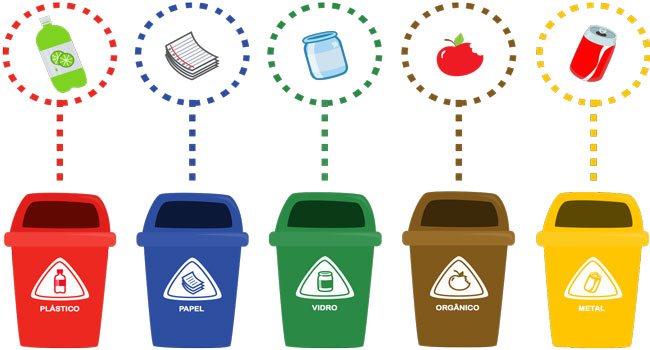
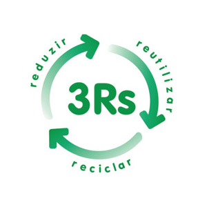
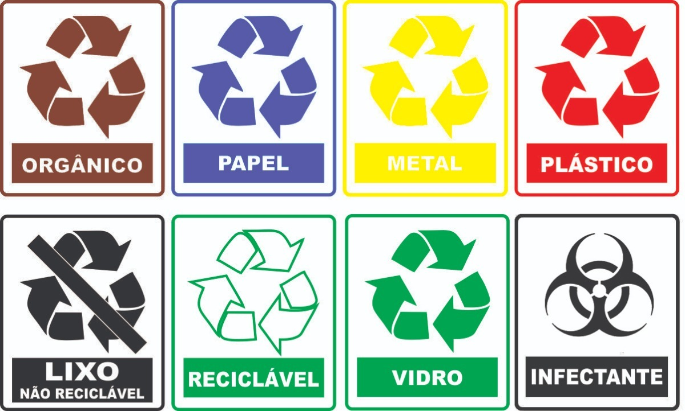

Reciclagem é o processo em que há a transformação do resíduo sólido que não seria aproveitado, com mudanças em seus estados físico, físico-químico ou biológico, de modo a atribuir características ao resíduo para que este se torne novamente matéria-prima ou produto.

Entenda o que é reciclagem:
Trata-se de pegar algo que não tem mais utilidade e transformá-lo novamente em matéria-prima para que se forme um item igual ou sem relação com o anterior. Isso é feito de várias maneiras e vemos o resultado desse processo no nosso cotidiano.
Esse é o caso de alguns bens de consumo, como latas de alumínio, papel de escritório e recipientes de plástico. Esses materiais são reciclados em grandes quantidades.
Aliás, a reciclagem desse tipo de material era comum no início do século XX, quando muitos produtos eram reutilizados devido às crises econômicas (como a de 1929) e às guerras mundiais. Na década de 1940, produtos como o náilon, a borracha,
papel e muitos metais eram racionados e reciclados, para ajudar a suportar o esforço da Segunda Guerra Mundial (1939-1944).
Os Três "Rs":
 Ela faz parte dos 3Rs : reciclagem, reutilização e redução. Como a reciclagem consiste em reprocessar um item, ela é diferente da reutilização (em que há apenas a utilização do item para outra função) e da redução (que consiste em diminuir o consumo de determinados produtos).
A reciclagem é quase uma obrigação nos dias de hoje. O primeiro passo é separar o lixo reciclável (plástico, metais, vidro, papel) do lixo orgânico.
O reciclável deve ser encaminhado para empresas ou cooperativas de trabalhadores de reciclagem, pois serão transformados novamente em matéria-prima para voltar ao ciclo produtivo.
Além de gerar renda e emprego para pessoas que trabalham com reciclagem, é uma atitude que alivia o Meio Ambiente de resíduos que vão levar anos ou séculos para serem decompostos.
Ações práticas para reciclar:
- Separar em casa o lixo orgânico do lixo reciclável. Este último deve ser encaminhado para pessoas que trabalham com reciclagem ou empresas recicladoras
- Separar por especificação o lixo reciclável tal como: papéis, vidro, metal e plástico.
No Brasil os recipientes para receber materiais recicláveis seguem o seguinte padrão:

Azul: papel/papelão
Vermelho: plástico
Verde: vidro
Amarelo: metal
Preto: madeira
Laranja: resíduos perigosos
Branco: resíduo hospitalar
Roxo: resíduos radioativos
Marrom: resíduos orgânicos
Cinza: resíduo geralmente não reciclável, misturado ou contaminado, não sendo possível de separação.